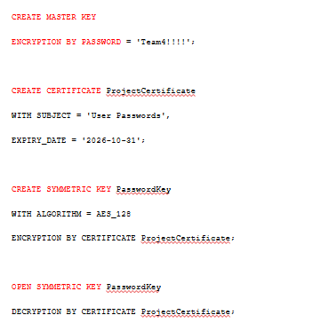

Database Design
As part of our Relational Database Management Systems class we were given a group assignment to create a database for a fictional website of our choosing. We had a really cool idea--to make a database for a website like Rotten Tomatoes. However, this version would put cultural influences on art at the center of movie reviews. This quickly proved to be a difficult undertaking, as we struggled to define culture in this context. The result of our work was a more complicated database than we had anticipated and an exciting challenge. In the image above, you can see the Entity Relationship Diagram we made for this database. We used Lucidchart to make a the diagram with Crow's Foot notation.
This database was designed with the following considerations:
Business Problems Addressed
- Allows users to perform searches on a piece of media and its metadata.
- Allows users to search media based on culture.
- Allows users to read professional critical reviews of media.
- Allows users to leave reviews on pieces of media.
Business Rules
- Critics need to have accounts associated with their name and association (i.e. a magazine).
- Each piece of media may have zero or more critical reviews.
- Each piece of media may have zero or more user reviews.
- Users and critics can leave multiple reviews.
- Each piece of media may be available on zero or more platforms.
- Each piece of media may have zero or more awards.
As mentioned in the business problems, there are users accessing the database to leave reviews. This means they will need a username and password. When we implemented the database, we included column excryption of these passwords for extra security. An excerpt of the SQL we used for the encryption is shown to the right.